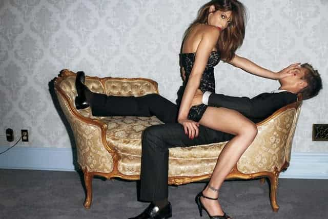

Eric is a self-employed artist who writes about modern culture. You can follow him on twitter.


During sex, I heard a faint whisper of “no” from the woman below me. I stopped thrusting immediately.
“Do you want me to stop?” I asked.
“No,” she said. She looked confused. “Don’t stop.”
I resumed cautiously. When she moaned, I felt her pussy convulse and picked back up full speed, reaching down to run my hands over her thin body and perky breasts. Suddenly, her wrists flew up in front of her. She meekly pushed against me, whimpering, “no, no, no!”
I stopped again, and jumping back. “What? What’s wrong?”
“Nothing. Why are you stopping?”
“You said no. When you say no, I stop.”
“Well… I was kind of hoping you’d keep going and just take me. I thought you were dominant?”
As someone who’d always been taught “no means no,” to have a woman directly tell me she ways saying “no” when she meant “yes” was shocking. From talking with other men, I’ve learned this is a fairly common experience.
It’s so common, Louis CK has a standup routine about it:
There’s a word for this. Rape training.
Women who say ‘no’ when they mean ‘yes’ encourage men to rape. They teach men that no doesn’t mean no, that women’s desires should be ignored, and that if men can get laid if they push through women’s boundaries.
The woman in my opening story was being extremely selfish. She expected me to know what she wanted while directly telling me the exact opposite. If I misread her desires, or she changed her mind about the experience later, I risk decades in jail and living the rest of my life as a sex offender. By saying ‘no’ when she didn’t mean it, she put my safety at risk.
Furthermore, this woman enacted a rape fantasy on me without my consent. I never directly agreed to the intense BDSM play she started. She never told me she what she was doing or gave me a safeword. I might have had triggers around fear of hurting women, or saw a close family member raped. This was the second time we’d had sex. Assuming I’d want to participate in a rape fantasy with her was itself an act of rape and a violation of my boundaries.

I know some of you will say I shouldn’t complain. After all, I had an attractive woman in bed, who wanted me to take her. If I only saw women as sex objects I wouldn’t care, but the idea of another person being harmed because of her actions makes me physically sick.
By giving a false ‘no,’ this woman diminished the power of other women’s real ‘no.’ I’m probably not the first man she’s given a false ‘no’ to. Another man might learn from her that ‘no’ actually means ‘take me hard’ and force himself on his next date when she gives a genuine ‘no.’ He would go to jail and she would be traumatized and raped.
My date’s behavior puts other women at risk, and shows she considers her sexual pleasure more important than others consent or safety.
Why would a woman behave this way? My date considered herself a feminist. Before she left, she told me she’d attended rallies and protests. Wouldn’t she of all people understand that “no means no?”
Saying “no” when she means yes absolves the woman of responsibility for her actions. She can decide later whether or not she meant her no, and have the man arrested for rape if he won’t have sex with her again, if her friends and family judge her, or if her boyfriend discovers she was cheating on him. She doesn’t feel like a slut, because isn’t consciously choosing sex. “It just happened.”
If her goal as a feminist was to help other women, she’d own her sexual desires, and ask directly for what she wanted. Doing so would teach men that when they listen to women, they are rewarded with mind-blowing sex. If her goal as a feminist was to avoid ever having to take responsibility for her actions, she’d do exactly what she did. Saying ‘no’ when she means ‘yes’ teaches men to ignore what women say and look for advice from “creepy” internet sites that write about game.
Pick-up artists have known for a long time women will protest before sex, even when they want it, to avoid appearing like a slut. There is a whole subset of game dealing with “last-minute-resistance” and “anti-slut defenses.” Feminists criticize these tactics as being akin to rape, but they wouldn’t exist if women’s words matched their actions.
I understand the desire to be taken, or make a rape fantasy “feel real,” but BDSM is actually hyper-consensual. Before a scene, partners will spell out exactly what they are okay with, what they aren’t, and pick a “safe-word” to say in place of “no” if they want their partner to stop.
An example of BDSM done right would be a female friend of mine who asked her boyfriend to enter her window and take her in the middle of the night. She told him she’d leave her window unlocked, say “red” if she wanted him to stop, and to surprise her by not telling what night of the week it would be.
After four nights of sleepless anticipation, her boyfriend entered at three in the morning, wearing only a ski mask and forced her to the ground as tears streamed down her face. She said it was the best sexual experiences of her life.
When a woman says no, you should always stop even if you think she doesn’t mean it.
No one is a mind reader. We won’t always be able to correctly read a woman’s unspoken desires. The risk of actually harming a woman or being arrested for rape outweighs the pleasure of a night of sex with a selfish human being.
After my date told she hoped I’d push through her ‘no,’ I told her that even if she doesn’t care about consent, I do. I explained safe words to her, and told her if she wanted to do a rape fantasy, she needed to pick a word other than ‘no’ to say in it’s place, so that if I accidentally hurt her, or she genuinely wanted me to stop, she’d have a way of communicating that to me.
Yes, I – a writer for Return of Kings – had to educate a feminist about consent, because she wanted me to rape her so bad. I struggle to find a joke that could possibly express the absurdity of the truth. If there is a God, he trolls us all.
I asked her a specific questions about her boundaries. Is she okay with anal? Getting slapped in the face? Choking? Being verbally degraded? I wanted to be very clear about what she was asking for. I’m a six foot tall man with background in the BDSM community. I could go to extremes she isn’t even aware of. I’ve seen people play with fire sexually. (Not metaphorical. I’ve seen a leather-clad woman singe the hair off a man’s chest with spinning orbs of flame as he screamed in terror from behind a gimp mask. It was awesome.)
Once we were clear on boundaries and safewords, I grabbed her wrists, pinned them to the bed, and forced my cock inside her. She shouted no and smiled at me as her attempts to push me away ground her pussy against me. I slapped her hard across the face, and pulled her nipples into the air. She shrieked as I flipped her over and called her a worthless slut, while fingering her ass and fucking her pussy simultaneously. We both orgasmed multiple times.
When she got home, she texted me “thanks for letting me be your slave :).” I never called her back.
Read More: 6 Reasons Why You Should Not Rape A Girl
{kind=link}